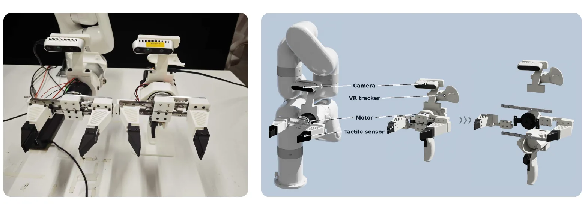

A modular tactile interface
Policies adapt their actions from appropriate task language, vision, and touch, with an optional language-conditioned force level when explicit regulation is needed.
Technical Report · 2026
Simulation, force-aware VLA policies, handheld data collection, and task-aligned sim-to-real evaluation — in one task loop.
1NVIDIA 2HKUST (GZ) 3University of Cambridge
Contact-rich manipulation requires a robot to infer appropriate interaction forces from task context and tactile feedback. We present Tacinf, a modular tactile vision–language–action infrastructure for this setting. It enables policies to predict robot actions and fingertip-force outputs from task language, vision, and touch; an optional language-conditioned force level can be provided when explicit force regulation is required, while ordinary task instructions need no force adverbs. Tacinf integrates synchronized trajectory replay and tactile simulation (Tabero), policy learning (VTLA), handheld collection with a shared deployment gripper (Tacumi), and task-aligned simulation-to-real evaluation (Taco).
We validate each component — the simulation data, benchmark, controller, and Tacumi — and report reliable multi-source data validation for tactile foundation models. The result is infrastructure for contact-rich tactile foundation models, not a single policy checkpoint.
Policies adapt their actions from appropriate task language, vision, and touch, with an optional language-conditioned force level when explicit regulation is needed.
A simulation evaluation protocol and real-robot alignment procedure test whether tactile foundation models are measured the same way in both domains.
A shared-gripper UMI interface unifies real teleoperation, simulation, and handheld trajectories, so complementary sources can be mixed at scale.
Tacinf is system-level infrastructure. Each component owns one part of the loop and exposes a stable interface to the others — tasks and force labels from simulation, a policy that predicts force as well as pose, hardware that collects and deploys with the same gripper, and an evaluation path that pairs simulation with the real robot.

Simulation benchmark
Reproducible language-conditioned tactile tasks in Isaac Lab. Open-source MuJoCo trajectories are reconstructed and replayed, then augmented with tactile images, marker fields, and 6-D contact force at 20 Hz.

Policy learning
A modular framework that equips foundation VLA models with touch. Three adapters — marker field, tactile image, and 6-D force — feed a shared backbone that predicts pose and fingertip-force setpoints, tracked by a force-aware controller.

Hardware
A handheld UMI device with a force-feedback master, a QDD-driven parallel gripper, and Xense tactile fingertips. The same gripper and sensor assembly mounts on the robot for deployment.

Sim-to-real
Task-aligned scene and embodiment reconstruction, multi-source co-training, and paired Sim / Sim2Real evaluation. Simulation replay augments real seeds; Tacumi adds spatial variation; one policy is trained across all three.
Teleoperation and Tacumi demonstrations with synchronized touch.
Tabero reconstructs the task and generates force-level variation.
VTLA learns pose and fingertip force from mixed sources.
Taco pairs the aligned simulator with the physical robot.
Deployment returns new contact data to collection — the loop closes across iterations, not just within a trial.
Evaluation covers 18 Tabero task conditions and 9 Taco task conditions, with over 10k simulated and 2k real-robot evaluations across roughly a dozen tactile foundation models. Each component is validated separately before the policy-level transfer claim.
Across eight policy variants spanning two VLA backbones and several tactile configurations, the combined task-and-force score gives r = 0.845 and MMRV = 0.195. Using success rate alone gives r = 0.726 and MMRV = 0.060, so the harder claim — that simulation preserves both task competence and force-level ordering — is the one that holds.
The combined score averages each domain's min–max-normalized mean success rate and force separation Δ. Literature values from PolaRiS use different task suites and protocols and are contextual references, not directly comparable results.
Policies receive task-specific adaptation on simulated data only, then run on the physical robot without real-robot task demonstrations, fine-tuning, or test-time adaptation. Mean SR averages the firm and gentle conditions; Δ = F AG − G AG.
Scroll horizontally to see all columns →
| Policy | Sim2Real mean SR (%) ↑ | Sim2Real Δ (N) ↑ | Sim mean SR (%) ↑ | Sim Δ/10 ↑ |
|---|---|---|---|---|
| None (π0.5) | 0 | 0 | 0 | 0 |
| Force E+FS (π0) | 94.17 | 2.305 | 34.70 | 1.857 |
| Field+FS (π0) | 95.00 | 0.615 | 57.00 | 1.633 |
| Field+FS (π0.5, state) | 82.20 | 2.396 | 71.35 | 1.649 |
| Field+FS (π0.5, no state) | 96.67 | 1.459 | 96.67 | 1.656 |
| Img+FS (π0.5, no state, H=1) | 84.44 | 1.114 | 95.65 | 1.539 |
The Sim column reports the raw simulated force separation divided by 10 for display only; it is not a force recalibration. Vision-only variants with no tactile input or supervision receive a score of zero under this protocol. Full table in the paper.
The baseline without tactile input and without force supervision fails completely. Every variant that predicts the six-dimensional fingertip-force target gains force modulation; every variant without it stays near zero under the gentle condition. Force supervision alone, with no tactile stream, already reaches 0.82 firm and 0.45 gentle.
Touch realizes its value through supervision: with the force loss enabled, the marker-field adapter gives the best firm–gentle trade-off at 0.86 firm / 0.52 gentle, against 0.82 / 0.45 for supervision alone. The supervision target is the decomposed contact force; the marker field observes precisely the shear and moment components that separate grip from applied interaction.
Four gripper-controller ablations on a Tabero object task: full force, reduced force, reduced force without the feedforward term, and reduced force without admittance. The predicted force is blue and the measured force red. Both feedforward and admittance are needed for accurate tracking; the same controller is exercised on the real robot in the paper.
Replaying LIBERO's MuJoCo data in Isaac Lab closely matches the original success distribution (average 0.85 → 0.76). Replacing the parallel jaw with a tactile gripper changes the force regime; success drops as the commanded force is reduced, which is why force regulation is part of the task definition rather than an afterthought.
Scroll horizontally to see all columns →
| Task | MuJoCo | Isaac | T-100 | T-25 | T-10 |
|---|---|---|---|---|---|
| Spatial | 0.86 | 0.83 | 0.42 | 0.24 | 0.07 |
| Object | 0.91 | 0.77 | 0.84 | 0.87 | 0.73 |
| Goal | 0.76 | 0.78 | 0.55 | 0.44 | 0.30 |
| LIBERO-10 | 0.86 | 0.66 | 0.60 | 0.47 | 0.32 |
| Average | 0.85 | 0.76 | 0.60 | 0.50 | 0.36 |
Datasets A, B, and C isolate force level and command type: continuous control at 25%, continuous control at 10%, and binary open/close at 10%. The binary variant does not modulate force at all (AG 35.8 N firm vs. 34.6 N gentle), while the continuous 10% dataset produces a large firm–gentle separation (AG 32.4 N vs. 3.7 N). Force modulation appears only when the policy is given a continuous force target to predict.
| Metric | A 100% / 25% | B 100% / 10% | C 100% / 10% |
|---|---|---|---|
| Success rate | 0.87 / 0.79 | 0.86 / 0.52 | 0.86 / 0.87 |
| Average grip force (N) | 31.3 / 8.5 | 32.4 / 3.7 | 35.8 / 34.6 |
| Max transient grip force (N) | 61.3 / 19.9 | 62.7 / 11.4 | 65.7 / 65.0 |
Force is not a label bolted onto images. Tabero generates it from contact and replays the same task at ordered force levels; Taco aligns the real workspace and embodiment to the simulator, then checks the channels the policy actually consumes.
The same trajectory is replayed with different gripper controller gains, producing ordered force conditions at 100%, 25%, and 10%. Language is attached to the measured distribution — “firmly” and “tightly” at the high end, “gently” and “softly” at the low end — while tasks whose nature demands force, such as blackboard wiping, need no adverb.
This is an ordered scale, not a binary distinction. Out-of-domain adverbs reserved for testing fall between the two extremes rather than collapsing onto either one, so the language condition specifies a position on a continuous force axis.
Three firm-force tasks, measured on the channels the policy consumes. Visual consistency is CLIP similarity; tactile consistency is SSIM and MAE; action consistency is action-label MAE.
Scroll horizontally to see all columns →
| Task | Third-person CLIP ↑ | Wrist CLIP ↑ | Tactile SSIM ↑ | Tactile MAE ↓ | Action MAE ↓ |
|---|---|---|---|---|---|
| Firm Task 1 | 0.781 | 0.770 | 0.941 | 0.0160 | 0.0708 |
| Firm Task 2 | 0.785 | 0.754 | 0.931 | 0.0182 | 0.0685 |
| Firm Task 3 | 0.794 | 0.766 | 0.932 | 0.0196 | 0.0733 |
All three channels align on every task: CLIP above 0.75, tactile SSIM above 0.93, action MAE below 0.074. This supports using replayed simulation data in place of real demonstrations on these tasks.
Ongoing. Real-robot task expansion (blackboard wiping, card swiping, knob turning) and real–simulation–UMI co-training are specified in the paper; their numerical results are not claimed in this version.
If you find Tacinf useful, please cite the technical report. Update the entry with an arXiv ID or venue once available.
@misc{wu2026tacinf,
title = {Tacinf: A Unified Tactile Infrastructure for Robot Manipulation},
author = {Wu, Qiwei and Chen, Xiangyu and Xiang, Xin and Zhang, Rui and
Kang, Yihang and Chen, Weiran and Xie, Zikang and Wang, Tao and
Wang, Xiangzheng and Bi, Tianyi and Zhang, Zhiyan and Wang, Xianpeng and
Zhou, Mingqian and Li, Yangfan and Li, Tao and Zhang, Weihua and
Xu, Renjing and Lai, Junjie},
year = {2026},
note = {Technical report},
url = {https://tacinf.github.io}
}